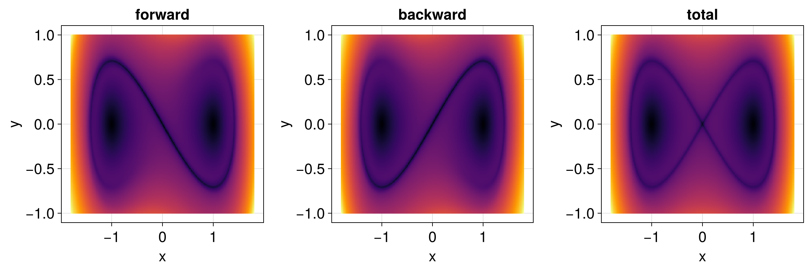
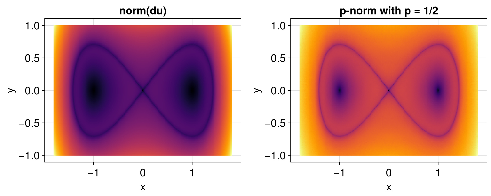
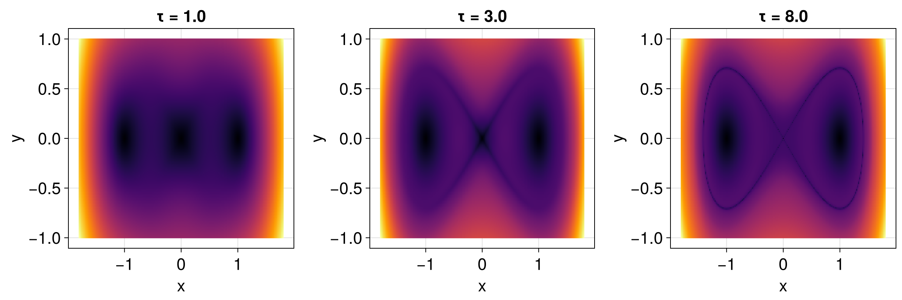
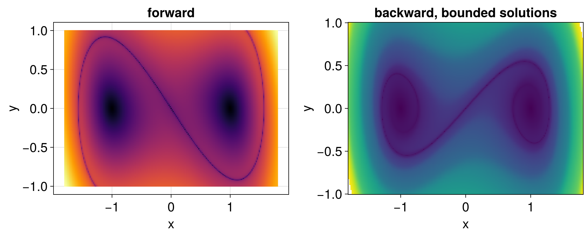
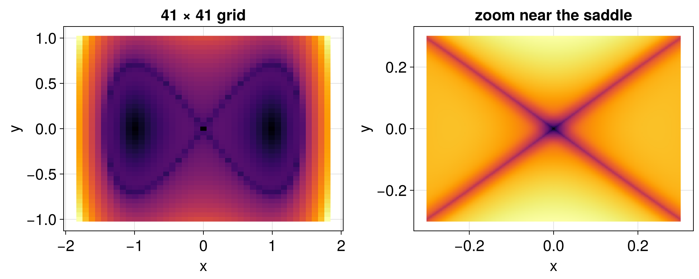

Choosing the descriptor and the time window
The picture painted by the Lagrangian descriptors depends on a few choices: the infinitesimal descriptor M, the length of the time window, the directions of time, and the grid of initial conditions. This page shows their effect on a simple example, and gives some guidance on how to choose them.
A model problem
We use the Duffing equation $\ddot x = x - x^3$, written as the system
\[\begin{cases} \dot x = y, \\ \dot y = x - x^3. \end{cases}\]
It has a saddle point at the origin, whose stable and unstable manifolds form two homoclinic loops, and two centers, at $(\pm 1, 0)$, surrounded by periodic orbits.
using LagrangianDescriptors, OrdinaryDiffEq, CairoMakie
using LinearAlgebra: norm
function duffing!(du, u, p, t)
du[1] = u[2]
du[2] = u[1] - u[1]^3
end
uu0 = [[x, y] for y in range(-1.0, 1.0, length = 201), x in range(-1.8, 1.8, length = 201)]
M(du, u, p, t) = norm(du)
prob = ODEProblem(duffing!, [0.0, 0.0], (0.0, 5.0))
lagsol = solve(LagrangianDescriptorProblem(prob, M, uu0), Tsit5())Why the method works
With M(du, u, p, t) = norm(du), the forward Lagrangian descriptor is the length of the solution over the time window. Consider two nearby initial conditions on opposite sides of the stable manifold of the saddle. Both approach the saddle, where they slow down, but then they leave it in opposite directions, along the two branches of the unstable manifold, so their lengths differ. Initial conditions on the stable manifold itself stay close to the saddle, where they move slowly. As a result, the forward descriptor, as a function of the initial condition, is not smooth across the stable manifold, which shows up as a sharp line in the picture. In the same way, the backward descriptor reveals the unstable manifolds. See Mancho et al. (2013) and Lopesino et al. (2017) for the theory.
Forward, backward and total
The forward descriptors reveal the stable manifolds, the backward ones the unstable manifolds, and their sum, the default, shows both:
fig = Figure(size = (1200, 400))
for (i, direction) in enumerate((:forward, :backward, :total))
ax = Axis(fig[1, i]; title = string(direction), xlabel = "x", ylabel = "y")
heatmap!(ax, lagsol, direction)
end
fig
If only the stable or only the unstable manifolds are of interest, it is cheaper to solve in a single direction, with the keyword direction = :forward or direction = :backward of LagrangianDescriptorProblem.
The infinitesimal descriptor
The most common choice is the norm of the velocity, norm(du), which makes the descriptor the length of the solution. Another common choice is the "$p$-norm" $\sum_i |\dot u_i|^p$, with $0 < p \leq 1$, introduced by Lopesino et al. (2017), for which the singular features at the manifolds are sharper and can be characterized rigorously. The value $p = 1/2$ is often used:
Mhalf(du, u, p, t) = sum(x -> sqrt(abs(x)), du)
lagsol_half = solve(LagrangianDescriptorProblem(prob, Mhalf, uu0), Tsit5())
fig = Figure(size = (1000, 400))
ax = Axis(fig[1, 1]; title = "norm(du)", xlabel = "x", ylabel = "y")
heatmap!(ax, lagsol)
ax = Axis(fig[1, 2]; title = "p-norm with p = 1/2", xlabel = "x", ylabel = "y")
heatmap!(ax, lagsol_half)
fig
Any function with the arguments of the table in the API can be used, e.g. depending on the state u instead of the velocity, or on a single component of the velocity, to highlight particular features of a problem.
The time window
The time span (t0, tf) of the problem sets the time windows: $[t_0, t_f]$ forward and $[2t_0 - t_f, t_0]$ backward, both of length $\tau = t_f - t_0$. A short window only reveals the structures near each initial condition, and a long one reveals more of them, as the solutions explore more of the phase space:
fig = Figure(size = (1200, 400))
for (i, τ) in enumerate((1.0, 3.0, 8.0))
sol = solve(LagrangianDescriptorProblem(remake(prob, tspan = (0.0, τ)), M, uu0), Tsit5())
ax = Axis(fig[1, i]; title = "τ = $τ", xlabel = "x", ylabel = "y")
heatmap!(ax, sol)
end
fig
A good window is comparable to the time scales of the dynamics of interest, e.g. a few periods of the periodic orbits, or a few times the time it takes to approach a saddle. With longer windows, the features become thinner and more intricate, which needs a finer grid of initial conditions, and solutions of unbounded systems may grow too large (see below). It is often worth trying a few values of $\tau$.
For a non-autonomous system, the descriptors are those at the initial time $t_0$: the structures move with $t_0$, and changing the start of the time span changes the picture, not only the window.
Diverging solutions
For some systems, such as dissipative systems backward in time, or systems in which solutions can escape to infinity, some solutions grow very large within the time window. Their descriptors then dominate the color scale, and the solver may take many small steps or fail. The keyword max_trajectory_value of solve stops the forward and the backward solutions, separately, once one of their components exceeds the given value, keeping the descriptor accumulated up to then. With damping, for instance, the solutions decay forward in time, but some of them grow backward in time:
function damped_duffing!(du, u, p, t)
du[1] = u[2]
du[2] = u[1] - u[1]^3 - 0.3u[2]
end
prob_damped = ODEProblem(damped_duffing!, [0.0, 0.0], (0.0, 8.0))
lagsol_damped = solve(LagrangianDescriptorProblem(prob_damped, M, uu0), Tsit5(); max_trajectory_value = 10.0)LagrangianDescriptorSolution
initial conditions: 40401 (201 × 201) of type Vector{Float64}
direction: :both
stopped by `max_trajectory_value`: 0 forward, 68 backwardThe numbers of forward and backward solutions stopped early are
count(lagsol_damped.terminated_forward), count(lagsol_damped.terminated_backward)(0, 68)The descriptors of the stopped solutions only measure how fast they diverge, so it may be clearer to leave them out of the picture, setting them to NaN:
xs = range(-1.8, 1.8, length = 201)
ys = range(-1.0, 1.0, length = 201)
Lbwd = lagsol_damped(:backward)
Lbwd[lagsol_damped.terminated_backward] .= NaN
fig = Figure(size = (1000, 400))
ax = Axis(fig[1, 1]; title = "forward", xlabel = "x", ylabel = "y")
heatmap!(ax, lagsol_damped, :forward)
ax = Axis(fig[1, 2]; title = "backward, bounded solutions", xlabel = "x", ylabel = "y")
# Makie's `heatmap(xs, ys, z)` has `z[i, j]` at `(xs[i], ys[j])`, hence the `permutedims`
heatmap!(ax, xs, ys, permutedims(reshape(Lbwd, size(uu0))))
fig
More generally, the return codes in lagsol.retcodes tell which solutions did not finish normally, e.g. because they reached the maximum number of steps; their descriptors are not reliable. See García-Garrido and García-Luengo (2022) for more on dissipative systems.
The grid of initial conditions
Features thinner than the spacing of the grid are missed, and the cost of the computation grows with the number of initial conditions. A practical approach is to start with a coarse grid over a large region, and then to refine it, or to zoom into the regions of interest:
coarse = [[x, y] for y in range(-1.0, 1.0, length = 41), x in range(-1.8, 1.8, length = 41)]
zoom = [[x, y] for y in range(-0.3, 0.3, length = 201), x in range(-0.3, 0.3, length = 201)]
fig = Figure(size = (1000, 400))
ax = Axis(fig[1, 1]; title = "41 × 41 grid", xlabel = "x", ylabel = "y")
heatmap!(ax, solve(LagrangianDescriptorProblem(prob, M, coarse), Tsit5()))
ax = Axis(fig[1, 2]; title = "zoom near the saddle", xlabel = "x", ylabel = "y")
heatmap!(ax, solve(LagrangianDescriptorProblem(prob, M, zoom), Tsit5()))
fig
The initial conditions do not need to form a grid: any collection can be used, e.g. points along a curve, or a two-dimensional slice of initial conditions of a higher-dimensional system, chosen for plotting with the keyword idxs (see the section on plotting in the API).
Random and stochastic equations
For random and stochastic equations, the picture also depends on the realization of the noise. By default, each initial condition has independent noise. The keyword shared_noise = true of solve gives the same noise path to all initial conditions, for the picture of a single realization of the noise, as in Balibrea-Iniesta et al. (2016). Averaging over realizations, with the keyword realizations, shows the structures shared by the realizations. The IncrementDescriptor gives the descriptor of Balibrea-Iniesta et al. (2016), given by the increments of the solutions over a time grid with step Δt, whose values depend on Δt, so it should be kept fixed when comparing pictures. See the stochastic Duffing equation for an example.
Summary
- Start with
M(du, u, p, t) = norm(du), or the $p$-norm with $p = 1/2$ for sharper features. - Choose the time window from the time scales of the dynamics, and try a few values.
- Use the forward descriptors for stable manifolds, the backward ones for unstable manifolds, and both for the full picture.
- Stop diverging solutions with
max_trajectory_value, and checklagsol.retcodes. - Start with a coarse grid, then refine it or zoom in.